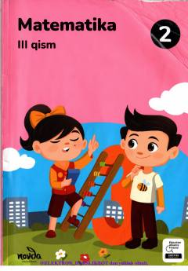

M22-sinf o‘quvchilari uchun matematika fanidan 3-qism darsligi.
Ushbu darslik umumiy o‘rta ta’lim maktablarining 2-sinf o‘quvchilari uchun matematika fanidan tayyorlangan 3-qism hisoblanadi. Unda o‘quvchilarga geometrik shakllar, ko‘paytirish amali hamda mantiqiy topshiriqlar tushuntiriladi. Kitob bolalarda matematik va amaliy ko‘nikmalarni shakllantirishga qaratilgan.